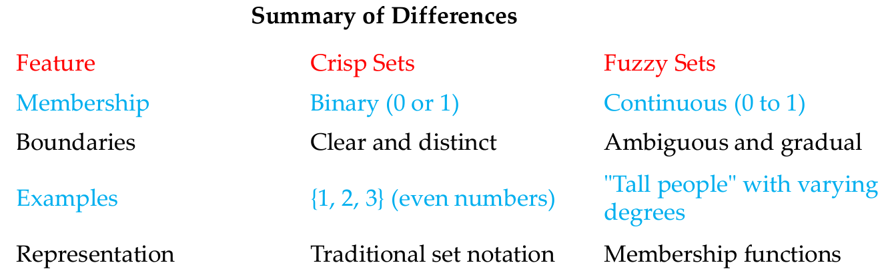

Definition 1：Data mining is the process of discovering patterns and insights from large sets of data. Think of it like digging for treasure in a huge pile of information—you’re looking for valuable nuggets of knowledge that can help make decisions or predictions.
Simple Example：Imagine a grocery store wants to understand what products customers buy together. By analyzing past purchase data, they might find that people who buy bread often also buy butter. Result: The store could then place bread and butter near each other on the shelves or create special promotions for them, boosting sales based on these insights. In essence, data mining helps organizations make sense of their data to improve strategies and outcomes.
Result: The store could then place bread and butter near each other on the shelves or create special promotions for them, boosting sales based on these insights. In essence, data mining helps organizations make sense of their data to improve strategies and outcomes.
Definition 2：Data mining is the process of analyzing large datasets to discover patterns, trends, and useful information. It combines techniques from statistics, machine learning, and database systems to extract valuable insights that can inform decision-making.
Key Aspects of Data Mining：
Data Collection: Gathering data from various sources, such as databases, spreadsheets, or online repositories.
Data Cleaning: Preparing the data by removing errors, duplicates, or irrelevant information to ensure accuracy.
Data Analysis: Applying algorithms and statistical methods to identify patterns and relationships within the data. This can involve:
Classification: Sorting data into predefined categories (e.g., spam vs. non-spam emails).
Clustering: Grouping similar data points together (e.g., segmenting customers based on buying behavior).
Association Rule Mining: Finding relationships between variables (e.g., "customers who bought X also bought Y").
Interpretation: Understanding and visualizing the results to derive actionable insights.
Deployment: Using the findings to make informed decisions, improve processes, or enhance products.
Example: In a retail context, a company might analyze transaction data to find that customers who buy athletic shoes often purchase fitness trackers. The store could then target promotions for fitness trackers to shoe buyers, ultimately boosting sales. Overall, data mining helps organizations leverage their data for strategic advantages, enhancing decisionmaking and predicting future trends.
Data Mining Process
The data mining procedure typically involves several key steps that guide the process from data collection to the extraction of valuable insights. Here’s an overview of the typical procedure:
Problem Definition
Identify Objectives: Clearly define what you want to achieve (e.g., predicting customer behavior, identifying market trends).
Scope the Project: Determine the scope, resources, and timeline for the data mining project.
Data Collection
Gather Data: Collect data from various sources such as databases, surveys, or web scraping.
Data Types: Ensure a mix of structured data (e.g., spreadsheets) and unstructured data (e.g., text, images) if needed.
Data Preprocessing
Data Cleaning: Remove errors, duplicates, and irrelevant information to ensure the dataset is accurate.
Data Transformation: Normalize or standardize data formats, and convert data types if necessary.
Handling Missing Values: Decide how to deal with missing data (e.g., imputation, removal).
Data Exploration
Descriptive Statistics: Analyze the data using summary statistics to understand its characteristics. Data Visualization: Use charts and graphs to visualize patterns and relationships in the data.
Data Visualization: Use charts and graphs to visualize patterns and relationships in the data.
Data Mining
Select Techniques: Choose appropriate data mining methods based on the problem (e.g., classification, clustering, regression).
Model Building: Develop models using algorithms suitable for the chosen techniques (e.g., decision trees, neural networks).
Training and Testing: Split the data into training and testing sets to validate model performance.
Evaluation
Model Assessment: Evaluate the models using metrics like accuracy, precision, recall, or F1 score, depending on the objective.
Refinement: Fine-tune models based on evaluation results, adjusting parameters or trying different algorithms.
Deployment
Implement Findings: Apply the insights gained from the models to real-world scenarios, such as business strategies or operational changes.
Monitoring: Continuously monitor the performance of deployed models and make adjustments as necessary.
Review and Maintenance
Periodic Review: Regularly review the data mining process and outcomes to ensure they align with business goals.
Update Models: Retrain models with new data as it becomes available to maintain their relevance and accuracy.
This procedure can be iterative; insights gained during evaluation may lead to further exploration or refinement of models, ensuring that the data mining process is dynamic and responsive to new information.
Key Techniques (Classification, Clustering, Association Rules)
Key techniques in data mining include classification, clustering, and association rules, each serving different purposes in analyzing and extracting insights from data. Here’s a brief overview of each:
Classification
Purpose: To categorize data into predefined classes or groups based on input features.
How It Works: A classification algorithm learns from a labeled dataset (where the categories are known) to predict the class of new, unseen data.
Examples:
Email Spam Detection: Classifying emails as "spam" or "not spam.“ Customer Segmentation:
Predicting whether a customer will buy a product based on their past behavior.
Clustering
Purpose: To group similar data points together without prior knowledge of categories.
How It Works: Clustering algorithms analyze the data to identify natural groupings based on similarity metrics, such as distance.
Examples:
Market Segmentation: Grouping customers based on purchasing behavior or demographics to tailor marketing strategies.
Image Segmentation: Dividing an image into parts to simplify analysis or identify objects.
Association Rules
Purpose: To discover interesting relationships or patterns between variables in large datasets.
How It Works: This technique identifies rules that describe how often items co-occur in transactions, using metrics like support, confidence, and lift.
Examples:
Market Basket Analysis: Finding rules like "customers who buy bread are likely to buy butter," which can inform product placement and promotions.
Recommendation Systems: Suggesting products based on the purchasing patterns of similar customers.
Classification is about predicting labels for data points, clustering is about grouping similar data points, and associationrules are about finding relationships between variables. Each technique serves unique purposes and can be used individually or in combination depending on the analytical goals.
Data Preprocessing
Data preprocessing is a crucial step in the data mining and machine learning pipeline that involves preparing raw data for analysis. It ensures that the data is clean, consistent, and suitable for the modeling process. Here’s a breakdown of its key components
Data Cleaning
Handling Missing Values: Identify and manage missing data by using techniques such as imputation (filling in missing values with averages, medians, or other estimates), removal of records with missing values, or using algorithms that can handle missing data.
Removing Duplicates: Identify and eliminate duplicate records to ensure that each entry is unique.
Correcting Errors: Identify and rectify inaccuracies or inconsistencies in the data, such as typos or incorrect formatting.
Data Transformation
Normalization/Standardization: Scale numeric data to a common range (e.g., 0 to 1) or standardize it to have a mean of zero and a standard deviation of one. This helps algorithms perform better, especially those sensitive to the scale of input data.
Encoding Categorical Variables: Convert categorical data into numerical format using techniques like one-hot encoding or label encoding, making it suitable for algorithms that require numerical input.
Data Integration
Combining Data Sources: Merge data from different sources or databases to create a comprehensive dataset for analysis. This may involve resolving conflicts between datasets and ensuring compatibility in terms of data types.
Data Reduction
Dimensionality Reduction: Reduce the number of features in the dataset while preserving important information, often through techniques like Principal Component Analysis (PCA) or feature selection methods.
Sampling: If the dataset is too large, you might use sampling methods to select a representative subset for analysis, which can reduce computational costs.
Data Discretization
Binning: Convert continuous data into discrete categories (bins). For example, transforming ages into categories like "teen," "adult," and "senior.”
Importance of Data Preprocessing
Effective data preprocessing improves the quality of the data, which directly influences the performance of data mining and machine learning models. Properly processed data helps in:
Reducing noise and irrelevant information
Improving model accuracy and reliability.
Enhancing the efficiency of the analysis process.
Handling Missing Data and Outliers
Handling missing data and outliers is an essential part of data preprocessing in data mining and machine learning. Both issues can significantly impact the quality of your analysis and the performance of your models. Here’s an overview of each:
Strategies for Handling Missing Data: Deletion:
Listwise Deletion: Remove any records (rows) that contain missing values. This is straightforward but can lead to loss of valuable information if many records are removed.
Pairwise Deletion: Use available data for calculations without removing entire records, allowing for analysis on subsets of data
Imputation:
Mean/Median/Mode Imputation: Replace missing values with the mean, median, or mode of the available data for that feature.
Forward/Backward Fill: For time series data, fill missing values with the previous (forward fill) or next (backward fill) available value.
Predictive Imputation: Use algorithms like regression or k-nearest neighbors to predict and fill in missing values based on other features.
Flagging
Flagging: Create a new binary feature to indicate whether the data was missing for that record, allowing the model to learn from the absence of data.
Using Algorithms That Handle Missing Data:
Some algorithms, like certain tree-based models, can handle missing values inherently during the modeling process.
Handling Outliers
Definition: Outliers are data points that differ significantly from other observations in the dataset. They can result from variability in the data or errors in data collection.
Strategies for Handling Outliers:
Detection
Statistical Methods: Use z-scores or the Interquartile Range (IQR) method to identify outliers. A common threshold is a z-score greater than 3 or data points lying outside 1.5 times the IQR.
Visualization: Box plots or scatter plots can visually reveal outliers.
Treatment
Removal: Exclude outliers from the dataset if they are deemed erroneous or if they significantly distort the analysis.
Transformation: Apply transformations like log or square root to reduce the impact of outliers.
Capping: Set a maximum or minimum threshold to limit the influence of outliers (also known as winsorizing).
Imputation: Replace outliers with a more typical value, such as the mean or median of the feature.
Importance of Handling Missing Data and Outliers
Improved Data Quality: Proper handling ensures that the dataset accurately represents the underlying phenomena being studied.
Enhanced Model Performance: Models trained on clean, well-processed data are more likely to generalize well to unseen data and make accurate predictions.
Better Insights: Addressing these issues can lead to more reliable conclusions and better decision-making based on the data.
Fuzzy Logic
Basics of Fuzzy Logic
Fuzzy logic is a form of many-valued logic that deals with reasoning that is approximate rather than fixed and exact. Here are the basics:
Concept of Fuzziness
Traditional Logic: In classical binary logic, statements are either true or false (1 or 0).
Fuzzy Logic: Introduces degrees of truth, where values can range between 0 and 1. This reflects real-world situations where things are not just black or white but can be somewhat true or somewhat false.
Fuzzy Sets
Definition: A fuzzy set is characterized by a membership function that assigns a degree of membership to each element. For example, in the fuzzy set "tall people," someone who is 6 feet tall might have a membership degree of 0.8, while someone who is 5.5 feet tall might have a degree of 0.4.
Membership Functions: Common shapes include triangular, trapezoidal, and Gaussian functions, which define how strongly an element belongs to a fuzzy set.
Fuzzy Rules
If-Then Statements: Fuzzy logic uses rules to represent knowledge. For example, "If temperature is high, then fan speed is fast." These rules help in decision-making based on fuzzy sets.
Rule Base: A collection of fuzzy rules that define how inputs relate to outputs.
Fuzzy Inference System (FIS)
Components: FIS consists of a rule base, a database of fuzzy sets, and an inference engine that applies the fuzzy rules to the input data to produce output.
Types: There are different types of FIS, including Mamdani and Takagi-Sugeno, each with its own methods of reasoning and output calculation.
Defuzzification
Process: Converting the fuzzy output from the inference process into a crisp value. This is necessary to make decisions or take actions based on fuzzy logic.
Methods: Common methods include the centroid method, bisector method, and maximum method.
Applications
Control Systems: Widely used in applications like air conditioning, washing machines, and automotive systems.
Decision Making: Applied in fields such as finance, medicine, and robotics, where human-like reasoning is beneficial.
Benefits
Tolerance for Uncertainty: Handles imprecise or vague data effectively.
Intuitive: Mimics human reasoning, making it easier to implement in systems requiring human-like decisions.
Fuzzy logic provides a powerful tool for modeling complex systems where uncertainty and vagueness are inherent, making it highly applicable in various fields.
Crisp vs. Fuzzy Sets
Crisp sets and fuzzy sets are fundamental concepts in set theory and play a key role in various fields, especially in fuzzy logic. Here’s a comparison of the two:
Crisp Sets
Definition: A crisp set is a collection of elements that either belong to the set or do not. The membership of an element in a crisp set is binary.
Membership
Binary Membership: An element has a membership value of either 1 (belongs to the set) or 0 (does not belong).
Example: In the set of "even numbers," the number 4 belongs (membership = 1), while the number 5 does not (membership = 0).
Characteristics
Clear Boundaries: The boundaries of crisp sets are well-defined and distinct.
No Ambiguity: There is no overlap or ambiguity in membership.
Mathematical Representation
Typically represented using traditional set notation (e.g., A={1,2,3}).
Fuzzy Sets
Definition: A fuzzy set allows for degrees of membership, where an element can partially belong to the set.
Membership
Continuous Membership Values: An element can have a membership value ranging from 0 to 1, reflecting varying degrees of membership.
Example: In the fuzzy set "tall people," a person who is 6 feet tall might have a membership value of 0.8, while someone who is 5.5 feet tall might have a value of 0.4.
Characteristics:
Ambiguous Boundaries: The boundaries of fuzzy sets are not strictly defined, allowing for overlap and gradual transitions between membership levels.
Reflects Real-World Complexity: Fuzzy sets can better represent vague concepts and subjective criteria.
Mathematical Representation
Represented using membership functions that define how each element belongs to the set. For example, a membership function might describe "tall" using a graph that varies from 0 to 1.
Conclusion
Crisp sets are suitable for situations where clear distinctions are necessary, while fuzzy sets provide a more nuanced approach to representing uncertainty and vagueness, making them valuable in fields such as artificial intelligence, control systems, and decision-making.
Membership Functions
Membership functions are a key component of fuzzy sets, used to define the degree of membership of elements within those sets. They quantify how much an element belongs to a fuzzy set, allowing for the representation of uncertainty and vagueness. Here’s a breakdown of the concept:
Definition
A membership function maps each element in a given universe of discourse to a value between 0 and 1. This value indicates the degree of membership of the element in the fuzzy set.
Applications
Control Systems: Used in fuzzy controllers (e.g., temperature control) to determine how much a variable belongs to categories like "cold," "warm," or "hot.”
Decision Making: Helps in evaluating options that are not clearly defined, allowing for nuanced judgments.
Pattern Recognition: Aids in classification tasks where boundaries between categories are not distinct.
Benefits
Flexibility: Can model complex concepts that are not easily defined by traditional binary logic.
Human-Like Reasoning: Mimics the way humans often think in terms of degrees rather than absolutes.
Conclusion
Membership functions are essential in fuzzy logic, enabling the representation of vague concepts and facilitating reasoning in uncertain environments. They play a crucial role in applications ranging from control systems to artificial intelligence.
Fuzzy Rules and Inference Systems
Fuzzy rules and inference systems are foundational elements in fuzzy logic, allowing for decision-making and reasoning in uncertain and imprecise environments. Here’s a breakdown of these concepts:
Fuzzy Rules
Definition: Fuzzy rules are conditional statements that describe how inputs relate to outputs in a fuzzy inference system. They typically follow an "if-then" format.
Structure:
Antecedent (If Part): Specifies the conditions based on fuzzy sets.
Consequent (Then Part): Specifies the outcome or action based on the conditions.
Example: "If temperature is high, then fan speed is fast.”
Types of Fuzzy Rules:
Simple Rules: Single antecedent and consequent.
Composite Rules: Combine multiple antecedents using logical operators (AND, OR) to refine conditions.
Example of Composite Rule: "If temperature is high AND humidity is high, then fan speed is very fast.”
Rule Base: A collection of fuzzy rules that define the behavior of the system. The more rules there are, the more complex and nuanced the decision-making can be.
Fuzzy Inference Systems (FIS)
Definition: A fuzzy inference system is a framework for mapping inputs to outputs based on fuzzy logic principles. It applies fuzzy rules to a set of inputs to derive conclusions or decisions.
Components:
Fuzzification: Converts crisp input values into fuzzy values using membership functions.
Rule Evaluation: Applies the fuzzy rules to the fuzzified inputs to produce fuzzy outputs. This is typically done using methods like minimum (AND operation) and maximum (OR operation) to combine rules.
Fuzzy Data Mining
Fuzzy data mining is an extension of traditional data mining techniques that incorporates fuzzy logic to handle uncertainty, imprecision, and vagueness in data. This approach is particularly useful in real-world applications where data is often not crisp or clearly defined. Here’s an overview of fuzzy data mining:
Concept of Fuzzy Data Mining
Fuzzy data mining aims to extract useful patterns, trends, and knowledge from large datasets that may contain ambiguous or imprecise information. It combines data mining methods with fuzzy logic to enhance the ability to deal with uncertainty.
Integration of Fuzzy Logic:
Fuzzy logic allows for degrees of truth, enabling the representation of concepts that are not strictly binary (true/false). For example, a temperature can be categorized as "warm" rather than just "hot" or "cold.”
Handling Uncertainty:
Real-world data often includes noise, incomplete information, and subjective interpretations. Fuzzy data mining provides a framework to work with such data, yielding more reliable insights.
Flexible Data Representation
It allows for the representation of data points in a way that acknowledges their fuzzy nature, making it easier to draw conclusions from complex datasets.
Techniques Involved:
Fuzzy Clustering:
Techniques like Fuzzy C-Means enable data points to belong to multiple clusters with varying degrees of membership, capturing the nuances in the data distribution.
Fuzzy Classification:
Classification models can incorporate fuzzy rules, improving accuracy by accommodating overlapping classes and ambiguous boundaries.
Fuzzy Rule-Based Systems:
These systems extract interpretable rules from data, providing insights that can be easily understood by users, even when the underlying data is fuzzy.
Applications
Market Research: Understanding consumer preferences, where responses may be subjective or vague (e.g., "I like this product a bit").
Healthcare: Diagnosing medical conditions based on symptoms that may not clearly indicate a specific illness.
Risk Assessment: Evaluating financial risks or safety concerns where data might be incomplete or uncertain.
Image Processing: Enhancing image analysis by allowing for varying degrees of feature recognition.
Benefits:
Improved Accuracy: By considering the fuzzy nature of data, models can produce more accurate predictions and analyses.
Enhanced Interpretability: Fuzzy rules are often more understandable to human users, facilitating better decision-making.
Adaptability: The fuzzy approach can be tailored to a wide range of applications across different fields, making it a versatile tool in data analysis.
In summary, fuzzy data mining is a powerful method for extracting meaningful insights from complex and uncertain data, enhancing traditional data mining techniques with the flexibility and nuance that fuzzy logic provides.
TOPSIS (Technique for Order of Preference by Similarity to Ideal Solution) Method
TOPSIS (Technique for Order of Preference by Similarity to Ideal Solution) is a multi-criteria decision-making method. It helps to rank alternatives based on their distance from an ideal solution. Here are the mathematical steps involved in the TOPSIS technique, along with an example.
Steps of TOPSIS
Construct the Decision Matrix: Create a decision matrix 𝐷 where rows represent alternatives and columns represent criteria.
Normalize the Decision Matrix: Normalize the decision matrix to ensure that different criteria can be compared. The normalized value 𝑟𝑖𝑗 is calculated using:
rij=(∑k=1mxkj)21xij
where 𝑥𝑖𝑗 is the original value, 𝑚 is the number of alternatives, and 𝑗 is the criterion.
Weight the Normalized Matrix: Multiply the normalized values by the weights 𝑤𝑗 assigned to each criterion:
vij=wj⋅rij
Determine the Ideal and Negative-Ideal Solutions: Identify the ideal (best) and negative-ideal (worst) solutions:
1) Ideal solution 𝐴+: The best value for each criterion.
2) Negative-ideal solution 𝐴−: The worst value for each criterion.
Calculate the Separation Measures: Calculate the distance of each alternative from the ideal and negative-ideal solutions:
Step 7: Rank the Alternatives Rank alternatives based on 𝐶𝑖∗
Conclusion
By following these steps, you can apply the TOPSIS technique to rank various alternatives based on multiple criteria effectively. The process is systematic and can be applied in various fields, including business, engineering, and environmental studies.
MABAC (Multi-Attributive Border Approximation Area Comparison) Models
Theoretical Framework (MABAC Model)
The Fuzzy MABAC (Multi-Attributive Border Approximation Area Comparison) model incorporates fuzzy logic into the traditional MABAC approach. This is particularly useful when dealing with uncertainty or imprecision in decision-making, allowing for a more flexible evaluation of alternatives.
Fuzzy MABAC Model Steps
Decision Matrix Construction: Create a matrix where rows represent alternatives and columns represent criteria, using fuzzy numbers.
𝑖 = 1,2, ... , 𝑚 (alternatives)
𝑗 = 1,2, ... , 𝑛 (criteria)
Each element 𝑎𝑖𝑗 represents the performance of alternative 𝑖 on criterion 𝑗.
Fuzzy Normalization: Normalize the fuzzy decision matrix to bring all criteria to a common scale.
Normalize the decision matrix to make the criteria comparable. This can be done using min-max normalization:
Assume the following weights: • Weight for Cost (𝑤1) = 0.6 • Weight for Profit (𝑤2) = 0.4
Step 4: Calculate Border Approximation Area
Step 5: Ranking of Alternatives
Now, we rank the projects based on their 𝐵𝑖 values: • Project B: 𝐵𝐵=0.6 • Project A: 𝐵𝐴=0.45 • Project C: 𝐵𝐶=0.4
Conclusion
Based on the MABAC model, Project B is identified as the best option, followed by Project A, while Project C is the least favorable. This example illustrates the step-by-step application of the MABAC technique for multi-criteria decision-making.

{kind=link}